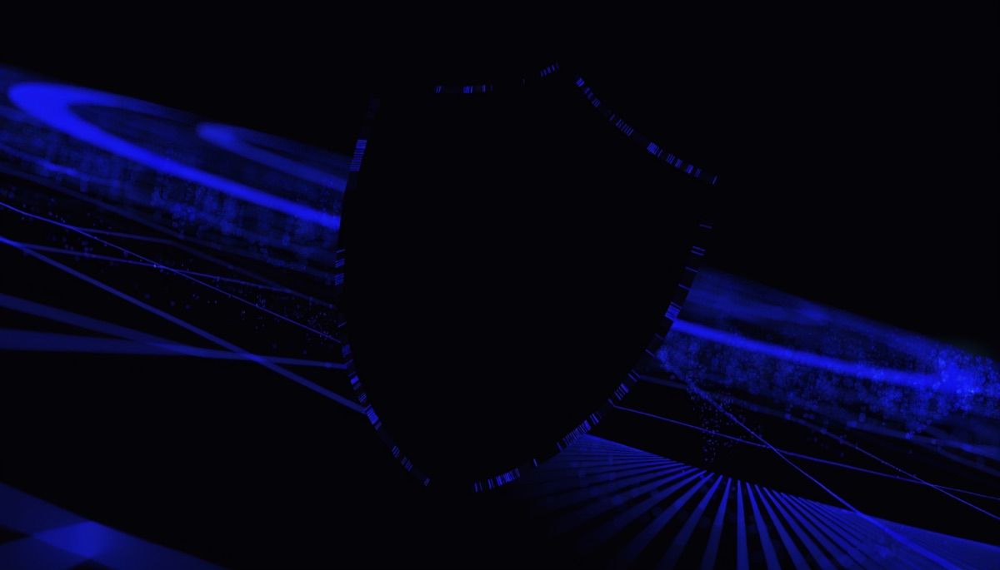

Kvaq
Category
Privacy/Security
Track
Mobile
Android on-device AI chat app — routes LLM chat, embeddings, RAG, and Whisper speech through the QVAC SDK in an embedded Bare worker, with no cloud fallback.

Android on-device AI chat app — routes LLM chat, embeddings, RAG, and Whisper speech through the QVAC SDK in an embedded Bare worker, with no cloud fallback.